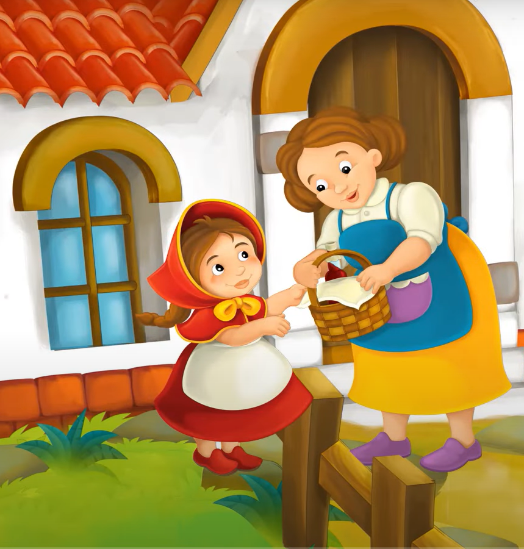

Érase una vez una dulce niña querida por todo áquel que la conociera, pero sobretodo por su abuelita. Una vez le regaló una pequeña caperuza de color rojo, que le quedaba tan bien que ella nunca quería usar otra cosa, así que comenzaron a llamarla Caperucita Roja. Todos los días, salía vestida con la caperuza. Caperucita Roja y su madre vivían en una preciosa casa alejada del bosque.
Un día, mientras Caperucita jugaba en el jardín, su mamá la llamó para pedirle a Caperucita que fuese a visitar a su abuelita porque se encontraba muy enfermita y débil. Su mamá tenía preparada una cestita con queso, pastel y una jarrita de miel en una canasta. Y le pidió a Caperucita que se la llevase para que su abuelita pudieses recuperarse pronto. Su mamá le dice que ya sabe que su casa está al final del sendero que cruza el bosque, así que Caperucita debe ir con mucho cuidado, no debe hablar con extraños, ni salirse del camino para buscar flores, pues podría encontrase con el lobo. Así, Caperucita le dijó a su mamá que no se preocupase ya que le haría caso en sus palabras. Caperucita se puso su capa, cogió la cesta y partió hacia la casa de su abuelita después de despedirse cariñosamente de su mamá.